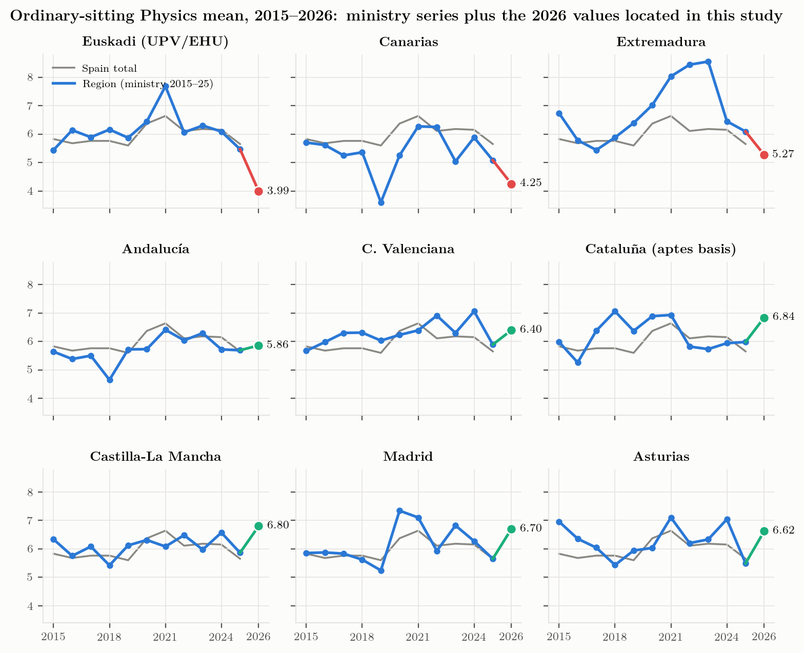

Spain 2026: nine communities, three directions
The 2026 Física results located in this study, against the 2025 Ministry baseline
The 2026 table
data/analysis/regions_2026_vs_2025.csv.
| Community | 2025 | 2026 | Δ | Pass % 2026 | Presented 2026 | Basis of the 2026 figure | Source type |
|---|---|---|---|---|---|---|---|
| País Vasco (EHU) | 5.47 | 3.99 | -1.48 | 39.8 | 2 066 | presented | official |
| Canarias | 5.08 | 4.25 | -0.83 | 40.7 | 1 395 | ULL+ULPGC pooled, presented-weighted | official |
| Extremadura | 6.09 | 5.27 | -0.82 | — | — | presented (N unpublished) | press |
| Andalucía | 5.69 | 5.86 | +0.17 | — | — | presented (N unpublished) | official |
| Comunitat Valenciana | 5.89 | 6.40 | +0.51 | 76.3 | 5 259 | presented | official |
| Cataluña | 6.04 | 6.84 | +0.80 | — | 8 021 | eligible students (aptes) | official |
| Castilla-La Mancha | 5.86 | 6.80 | +0.94 | 80.1 | 1 781 | presented | official |
| Comunidad de Madrid | 5.65 | 6.70 | +1.05 | — | — | chart label, 1 decimal | official |
| Asturias | 5.49 | 6.62 | +1.13 | 76.9 | — | presented (N unpublished) | official |

Nine of seventeen communities have a published or retrievable 2026 Física mean. Six rose, three fell, and the three that fell are Euskadi, Canarias and Extremadura. Weighted by the number of presented students where it is known (Canarias, C. Valenciana, Cataluña, Castilla-La Mancha), the change outside Euskadi is \(+0.58\); the median change over the eight other communities is \(+0.65\). Read together with the table of annual changes in the previous chapter, this is the central comparative fact of the study:
In 2025 the Physics mean fell in 14 of 17 communities (mean \(-0.81\)). In 2026 it recovered in six of the nine communities that have reported — five of them by \(+0.5\) to \(+1.13\), Andalucía by \(+0.17\) — and fell further in three. The competency model of RD 534/2024 was applied in all seventeen in both years. What differs between Cataluña (\(+0.80\)) and Euskadi (\(-1.48\)) is not the legal framework; it is the paper, the marking scheme and the tribunals of each community.
Small multiples, 2015–2026

Three readings of Figure 2:
- Euskadi tracked the national line closely for a decade (gap within ±0.5 except 2021) and detached from it in 2025–26.
- Canarias is the one community that had already fallen to a level below 3.99: 5.36 → 3.60 in 2019 (six other communities have had a one-year fall at least as large as Euskadi’s −1.48, but none reached this level), then 5.25 in 2020. Its 2024 → 2025 → 2026 path (5.88 → 5.08 → 4.25 pooled) is the same two-step fall as Euskadi’s (6.09 → 5.47 → 3.99), from a lower starting level and ending a quarter of a point above it. The Canarias Physics coordination minutes of October 2025 (Gobierno de Canarias, Subcomisión de Física, 2025) already listed candidate explanations for 2025 — superficial preparation, low incentive (few degrees require a high Física mark), Física being the third exam of the same day after Matemáticas and Química, the weighting of Matemáticas crowding out Física — and Las Palmas undertook to run an item/option error study for 2026.
- Extremadura is the third faller, from a level that had been among the highest in Spain in 2021 (8.03, second to La Rioja) and the highest in 2022–2023 (8.44, 8.55) before a \(-2.10\) correction in 2024; its 2026 figure (5.27, the lowest subject in the UEx table) is press-reported and should be confirmed from the university’s statistics when they become readable.
Two long series that did not exist in the project before
Castilla-La Mancha, 2021–2026, both sittings (UCLM Power BI). The ordinary mean went 6.08, 6.48, 5.97, 6.57, 5.86, 6.80 with pass rates 71.7, 75.1, 71.2, 76.6, 65.6, 80.1 % on 1 589–1 795 presented students each year; the extraordinary sitting sits 1.2–2.8 points lower (3.97 in 2026 on 142 presented). The 2025 dip and 2026 recovery are exactly the national pattern. The dashboard also gives the 2026 result by province (Albacete 6.75, Ciudad Real 6.91, Cuenca 6.68, Toledo 6.77): within a single tribunal system the between-province spread is 0.23 points, a useful yardstick for what “normal” geographic dispersion looks like under one paper and one marking scheme.
La Rioja, 2010–2022 (UR chart-only PDF). Física ordinary means 4.49, 5.49, 6.73, 5.63, 6.17, 5.78, 6.10, 6.33, 6.61, 6.15, 6.97, 8.31, 7.43, with pass rates 41.8 % in 2010 and 63.6 % in 2011 before settling at 66–86 % in normal years (94 % in 2021). This matters for Euskadi because it shows that the 2010–2011 trough was national: La Rioja’s 4.49 / 41.8 % in 2010 mirrors Euskadi’s 4.45 / 46.3 %, and both had gained two points by 2012 (Euskadi in one step, La Rioja in two). The Basque series’ worst historical years were not a Basque anomaly either.
Comparability, stated once
The figures in Table 1 are not a designed experiment and the following differences are irreducible:
- Denominator. Cataluña’s mean is over students eligible for university assignment; everyone else’s is over students who sat the exam. Cataluña’s 2025 value on the same basis (6.04) is used for its change, so the change is comparable even if the level is not.
- Precision. Madrid’s values are chart labels to one decimal; Andalucía, Extremadura and Asturias publish the mean but not the number of examinees.
- Population. The Ministry 2025 baselines include FP and foreign-access students; university releases sometimes report Bachillerato students only. The effect on Física, a subject taken overwhelmingly by Bachillerato science students, is small (≤ 0.06 in eight of the nine comparators; 0.11 for Cataluña).
- Revision stage. Some releases are provisional (before revision), some are final. EHU’s 3.99 is the figure the university itself chose to present on 6 July, after the revision window.
None of these can turn a \(+0.8\) into a \(-1.5\). The direction and rough magnitude of the 2026 divergence are robust to every caveat listed.
Bottom line for the Basque question
If the 2026 Basque result had been caused by the competency model as such, the other sixteen communities — which use the same model — would show the same sign in 2026. They do not; most show the opposite sign. The Basque result is regional, and it is shared, in a slightly milder form, by one other region with a documented history of Physics volatility (Canarias) and possibly by a third (Extremadura). The next chapter asks what the shape of the grade distribution can add.